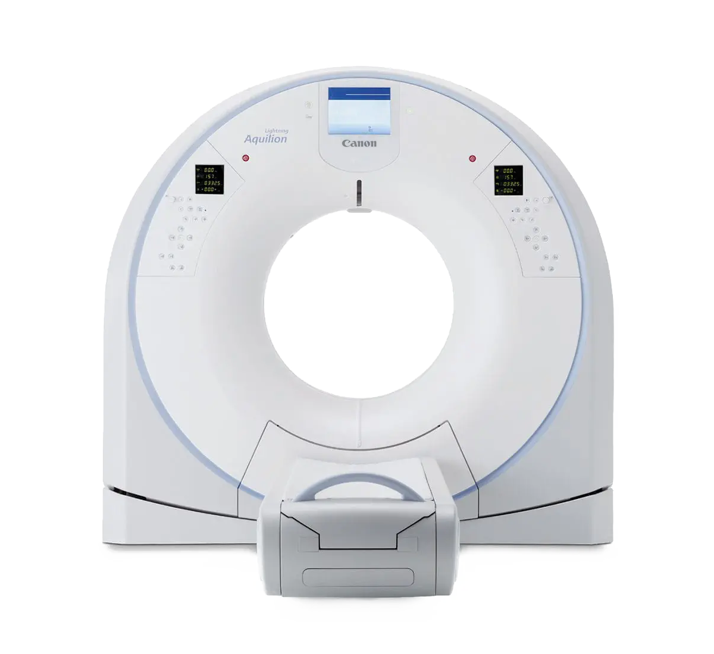
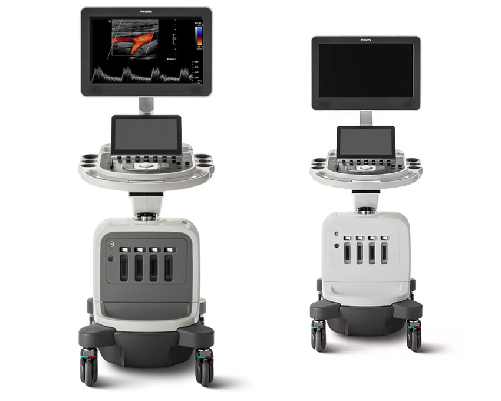
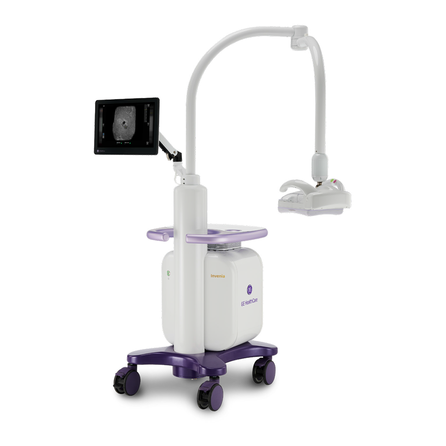

-
3T MRI
Canon Vantage Galan 3T
- 최대 97% 소음 감소와 넓은 검사 구경으로 편안하고 안정적인 검사환경 제공
- AI 딥러닝 재구성으로 신속·고품질 영상 구현
- 조영제 없이도 허혈성 병변, 뇌졸중·뇌경색 등 뇌 관류 평가에 특화된 고해상도 진단 가능

-
CT
Canon Aquilion Lightning 160
- 한 번의 촬영으로 최대 160장 고화질 이미지 확보
- 78cm 넓은 검사 구경으로 편안한 촬영 환경 제공
- 퓨어버전 디렉터 탑재로 작은 병변 진단 가능
 -
초음파
Philips Affiniti 70 / Affiniti 50
- AI 솔루션 적용으로 보다 신속하고 정확한 진단 가능
- 자동화 기능 통해 검사 효율성 높아지며 고해상도·저노이즈 영상 구현가능
- 복부·심장·유방·갑상선·근골격계 등의 분야에 적용할 수 있는 고화질 영상
 -
자동유방초음파
Invenia™ ABUS Premium
- AI 기반 솔루션으로 일관된 스캔 품질과 효율성 향상
- 치밀유방 여성들의 조기 암 진단
- 맘모그래피 병용 시 침윤성 암 발견율 55% 향상 입증
- FDA유일 승인 / 국내 신의료기술 획득
 -
유방촬영(맘모그래피)
Siemens Mammomat Fusion
- 저선량 Adaptive OpDose기능과 통증약화 OpComp기능 탑재
- 최적의 압박 정도를 미리 계산하여 수검자의 불필요한 통증 최소화
- 적은 방사선으로도 선명한 영상 구현
-
유방촬영(맘모그래피)
Hologic Selenia Dimensions
- 세계 최초 FDA에서 승인받은 유방촬영장비
- 각 환자에 맞는 최저의 방사선량을 자동으로 조절
- 특허기술인 FAST Paddle을 이용하여 보다 편안한 검사 진행
- 1340만 화소의 고화질 이미지로 정밀진단 가능
-
골밀도 측정기
Hologic Horizon Ci
- 고해상도 저선량 DXA 기술로 골밀도 측정, 골다공증 진단 및 골절 위험 평가
- 한 부위당 10초내외 빠른 스캔 속도로 검사시간 단축
- 근감소증 진단 가능
-
골밀도 측정기
Hologic Discovery
- 골밀도 측정시간, 단 30초!
- 중첩영역없이 정확한 측정영역
- 높은 해상도 제공
-
X-ray
DRGEM GXR-C52S
- 불필요한 피폭 최소화하면서 영상 품질 유지 가능
- 더 선명하게 보이는 흉부 X-ray
- 빠르고 안정적인 촬영